5 Chemical energetics
Energy changes, calorimetry, bond enthalpy and Hess’ law
5 Chemical energetics
本章对应 CIE 9701 AS Chemistry 的 Chemical energetics。重点是用能量变化描述反应，处理量热实验、键焓以及 Hess’ law 能量循环。
Learning objectives
学完本章后，你应该能够：
- define standard enthalpy changes of formation, combustion and neutralisation;
- identify exothermic and endothermic reactions from data and reaction profiles;
- use \(q=mc\Delta T\) and \(ΔH=q/n\) in calorimetry;
- define average bond enthalpy and calculate \(ΔH\) from bonds broken and formed;
- use standard enthalpies of formation and combustion in Hess’ law cycles;
- label activation energy and enthalpy change on a reaction pathway diagram;
- explain why experimental enthalpy values differ from standard values.
Key ideas
- Enthalpy change is a change in the chemical energy of the system; its sign is opposite to the temperature change of the surroundings in a simple calorimeter.
- Standard state means the most stable physical state at 298 K and 100 kPa (or the pressure specified by the syllabus/data); state symbols matter in enthalpy equations.
- Hess cycles are sign-and-coefficient exercises: reverse an equation, reverse ΔH; multiply an equation, multiply ΔH.
5.1 Enthalpy Change, ΔH
Exothermic and endothermic changes
An exothermic reaction transfers energy from the reacting system to the surroundings. The surroundings warm and \(ΔH\) is negative. Combustion and most strong acid–alkali neutralisations are exothermic.
An endothermic reaction takes in energy from the surroundings. The surroundings cool and \(ΔH\) is positive. Bond breaking is endothermic; bond making is exothermic.
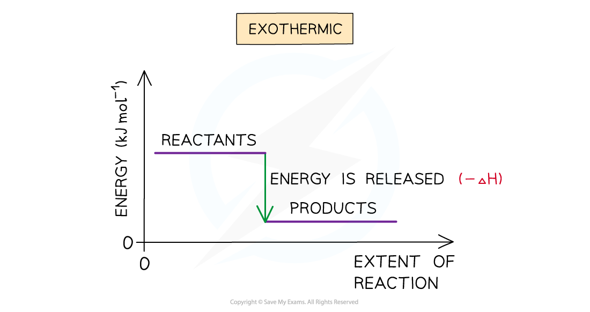
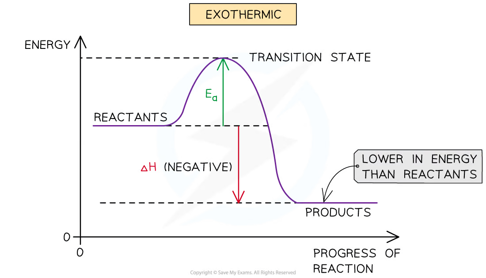
Reaction profiles
On an energy profile, the vertical difference between reactants and products is the enthalpy change:
\[ΔH=H_{\text{products}}-H_{\text{reactants}}\]
The activation energy is the energy difference from the reactants to the transition state. For the reverse reaction it is measured from the products to the same maximum. A catalyst lowers the activation energy but does not change \(ΔH\).
Standard enthalpy changes
The standard enthalpy change of formation, \(ΔH_f^\ominus\), is the enthalpy change when one mole of a compound is formed from its elements in their standard states under standard conditions.
The standard enthalpy change of combustion, \(ΔH_c^\ominus\), is the enthalpy change when one mole of a substance is completely burned in excess oxygen under standard conditions.
The standard enthalpy change of neutralisation, \(ΔH_{neut}^\ominus\), is the enthalpy change when one mole of water is formed by reaction between an acid and an alkali under standard conditions. Standard conditions here are \(298\ \mathrm{K}\) and \(101\ \mathrm{kPa}\).
Elements in their standard states have \(ΔH_f^\ominus=0\), for example C(graphite), H2(g) and O2(g). Do not use an allotrope or an incorrect state: diamond is not the standard state of carbon, and H2O(l) and H2O(g) have different enthalpies of formation.
Calorimetry
The heat transferred to a solution is approximated by:
\[q=mc\Delta T\]
where \(q\) is in J, \(m\) is the mass of solution in g, \(c\) is the specific heat capacity in \(\mathrm{J\ g^{-1}\ K^{-1}}\), and \(\Delta T\) is the temperature change. For dilute aqueous solutions, \(1\ \mathrm{cm^3}\) is usually taken as \(1\ \mathrm{g}\).
For a reaction involving \(n\) moles:
\[\Delta H=\frac{q}{n}\]
If the temperature rises, the reaction is exothermic and the enthalpy change is negative. If the temperature falls, the reaction is endothermic and the enthalpy change is positive.
Worked example · Neutralisation
Calculating a molar enthalpy change
Mix \(30.0\ \mathrm{cm^3}\) of \(0.0250\ \mathrm{mol\ dm^{-3}}\) potassium hydroxide with the same volume and concentration of nitric acid. The temperature rises by \(0.50\ ^\circ\mathrm{C}\) and \(c=4.20\ \mathrm{J\ cm^{-3}\ K^{-1}}\).
\[q=(60.0)(4.20)(0.50)=126\ \mathrm{J}\]
\[n(\ce{H2O})=0.0300\times0.0250=7.50\times10^{-4}\ \mathrm{mol}\]
The solution warmed, so:
\[\Delta H=-\frac{126}{7.50\times10^{-4}}=-168\ \mathrm{kJ\ mol^{-1}}\]
Experimental values are often less exothermic than standard values because heat is lost to the surroundings, combustion may be incomplete, some heat warms the apparatus, and the reactants may not be in their standard states. Insulation, a lid, stirring, a copper spiral and complete combustion reduce these errors.
In calculations, the solution gains \(q=mcΔT\); the reacting system loses the same magnitude of energy in an exothermic reaction. Divide by the moles of the species named in the definition, such as moles of water formed for neutralisation or moles of fuel burned for combustion.
Bond enthalpy
The average bond enthalpy is the energy needed to break one mole of a particular type of bond in gaseous molecules, averaged over a range of compounds. It is positive because bond breaking requires energy.
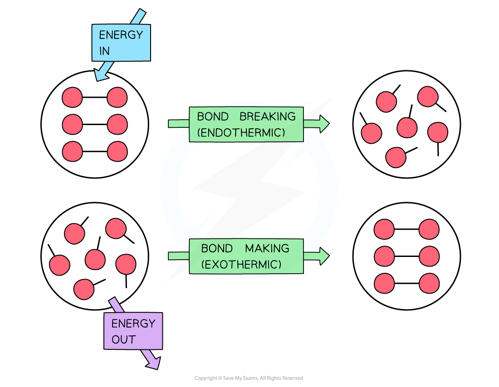
Use:
\[\Delta H_r^\ominus=\sum E(\text{bonds broken})-\sum E(\text{bonds formed})\]
Count every bond in the balanced equation. The answer is an estimate because average bond enthalpies are used; the exact bond strength depends on the molecule.
Write the balanced equation and draw/display the bonds before calculating. Break all bonds in the reactants, form all bonds in the products, then use broken − formed. Bond enthalpy calculations are especially unreliable when a product is not gaseous, because average bond enthalpies refer to gaseous molecules.
5.2 Hess’s Law
Hess’ law states that the overall enthalpy change is independent of the route taken between the same initial and final states. Therefore, equations may be reversed and multiplied, provided their enthalpy changes are reversed and multiplied in the same way.
For formation data:
\[\Delta H_r^\ominus=\sum \Delta H_f^\ominus(\text{products})-\sum \Delta H_f^\ominus(\text{reactants})\]
For combustion data, construct a cycle in which both the reactants and products burn to the same final products, usually \(\ce{CO2(g)}\) and \(\ce{H2O(l)}\). Keep coefficients, state symbols and signs consistent.
Before calculating, mark the start and end of the required equation. Follow any alternative route with arrows: moving against an arrow reverses the sign of ΔH. This prevents the most common Hess-law error, which is combining correct numerical values with the wrong signs.
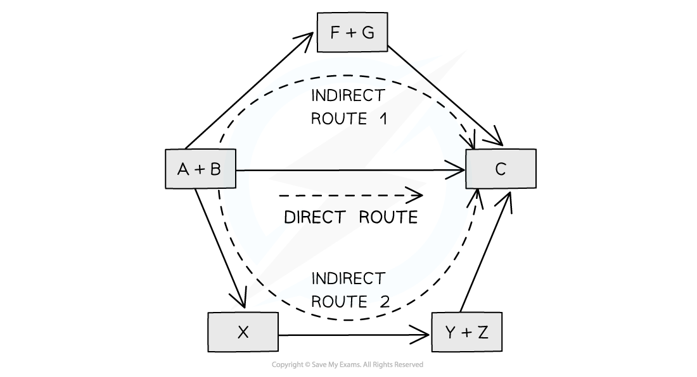
Worked example · Formation from combustion data
Propanol
For \(\ce{C3H6O}\), suppose \(\Delta H_c^\ominus(\ce{H2})=-286\), \(\Delta H_c^\ominus(\ce{C})=-394\) and \(\Delta H_c^\ominus(\ce{C3H6O})=-1816\ \mathrm{kJ\ mol^{-1}}\).
The elements produce the same combustion products as propanol, so:
\[\Delta H_f^\ominus=3(-394)+3(-286)-(-1816)=-224\ \mathrm{kJ\ mol^{-1}}\]
Chapter checklist
Multiple choice questions
5 Chemical energetics - Multiple Choice: Easy
Question 1 · Relative strength of hydrogen bonds · 1.5 Choice Easy Q1
Which quantity gives the best indication of the relative strengths of the hydrogen bonds between water molecules in the liquid state?
Show explanation
A. Vaporisation overcomes intermolecular hydrogen bonds, so its enthalpy is related to their strength.
Question 2 · Hess’ law cycle · 1.5 Choice Easy Q2
Enthalpy changes that are difficult to measure directly can often be determined using Hess’ law to construct an enthalpy cycle. Which enthalpy change is indicated by X in the enthalpy cycle shown?
The arrow for X forms \(3\ \mathrm{mol}\) of \(\ce{H2O(l)}\) from the elements.
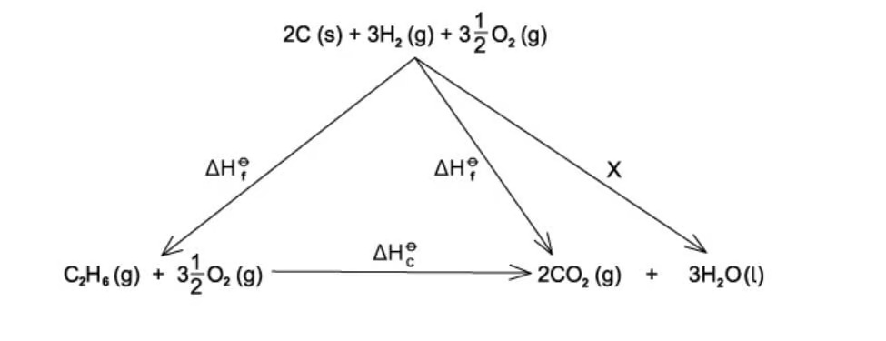
Show explanation
C. The arrow is in the formation direction and produces three moles of water, so it represents \(+3\Delta H_f^\ominus(\ce{H2O})\).
Question 3 · Formation and combustion · 1.5 Choice Easy Q3
Which equation below can represent both an enthalpy change of formation and combustion?
Show explanation
B. Sodium and oxygen are elements in their standard states and sodium is reacting with oxygen to form its oxide.
Question 4 · Activation energy from a pathway · 1.5 Choice Easy Q4
The reaction pathway for a reversible reaction is shown in the original question page. Which statement is correct?
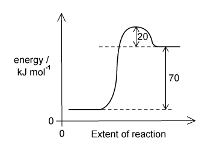
Show explanation
C. The products are \(70\ \mathrm{kJ\ mol^{-1}}\) above the reactants and the peak is another \(20\ \mathrm{kJ\ mol^{-1}}\) above the products.
Question 5 · Reaction profile statements · 1.5 Choice Easy Q5
The reaction pathway for a reversible reaction is shown in the original question page. Which statements are correct?
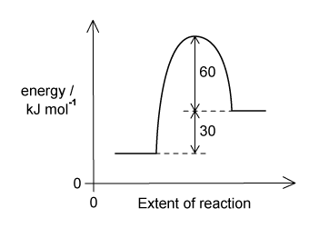
- The forward reaction is endothermic.
- The enthalpy change for the backward reaction is \(-30\ \mathrm{kJ\ mol^{-1}}\).
- The activation energy for the forward reaction is \(+90\ \mathrm{kJ\ mol^{-1}}\).
Show explanation
D. Products are \(30\ \mathrm{kJ\ mol^{-1}}\) above reactants, the reverse change is \(-30\), and the peak is \(90\ \mathrm{kJ\ mol^{-1}}\) above reactants.
Question 6 · Thermodynamic possibility and rate · 1.5 Choice Easy Q6
Which statement best describes why a reaction is said to be thermodynamically possible yet kinetically controlled?
Show explanation
A. A reaction is thermodynamically favourable when products have lower enthalpy, but it may still be slow because of a large activation energy.
Question 7 · Heat transferred in calorimetry · 1.5 Choice Easy Q7
A student carried out an experiment to determine the enthalpy change for combustion of ethanol. The water temperature rose from \(21^\circ\mathrm{C}\) to \(54^\circ\mathrm{C}\). The mass of the beaker plus water was \(150.00\ \mathrm{g}\) and the mass of the empty beaker was \(50.0\ \mathrm{g}\). The specific heat capacity of water is \(4.18\ \mathrm{J\ g^{-1}\ ^\circ C^{-1}}\). How much heat energy went into the water?
Show explanation
D. \(q=mc\Delta T=(100)(4.18)(33)=13794\ \mathrm{J}\).
5 Chemical energetics - Multiple Choice: Medium
Question 8 · Molar enthalpy of neutralisation · 1.5 Choice Medium Q1
A student mixed \(30.0\ \mathrm{cm^3}\) of \(0.0250\ \mathrm{mol\ dm^{-3}}\) potassium hydroxide solution with \(30.0\ \mathrm{cm^3}\) of \(0.0250\ \mathrm{mol\ dm^{-3}}\) nitric acid. The temperature rose by \(0.50^\circ\mathrm{C}\). The final mixture had a specific heat capacity of \(4.20\ \mathrm{J\ cm^{-3}\ K^{-1}}\). What is the molar enthalpy change for the reaction?
Show explanation
D. \(q=60(4.20)(0.50)=126\ \mathrm{J}\) and \(n=0.0300(0.0250)=7.50\times10^{-4}\ \mathrm{mol}\), so \(\Delta H=-168\ \mathrm{kJ\ mol^{-1}}\).
Question 9 · Formation enthalpy from combustion data · 1.5 Choice Medium Q2
Propanol has molecular formula \(\ce{C3H6O}\). The enthalpy change of combustion of hydrogen is \(-286\ \mathrm{kJ\ mol^{-1}}\), of carbon is \(-394\ \mathrm{kJ\ mol^{-1}}\), and of propanol is \(-1816\ \mathrm{kJ\ mol^{-1}}\). Calculate the enthalpy change for formation of propanol.
Show explanation
B. \(\Delta H_f=3(-394)+3(-286)-(-1816)=-224\ \mathrm{kJ\ mol^{-1}}\).
Question 10 · Neutralisation calculation · 1.5 Choice Medium Q3
An experiment used \(75\ \mathrm{cm^3}\) of \(3.00\ \mathrm{mol\ dm^{-3}}\) hydrochloric acid and \(75\ \mathrm{cm^3}\) of \(3.00\ \mathrm{mol\ dm^{-3}}\) potassium hydroxide. The temperature rose by \(14^\circ\mathrm{C}\) and the specific heat capacity was \(4.20\ \mathrm{J\ g^{-1}\ K^{-1}}\). Which calculation is correct for the molar enthalpy change?
Show explanation
B. Use the total volume for \(q\) and \(0.075\times3.00\) moles of water formed.
Question 11 · Enthalpy from formation data · 1.5 Choice Medium Q4
For the reaction \(\ce{4NH3(g) + 5O2(g) -> 4NO(g) + 6H2O(g)}\), the standard enthalpies of formation are \(-51.3\), \(+92.2\) and \(-239.6\ \mathrm{kJ\ mol^{-1}}\) for \(\ce{NH3(g)}\), \(\ce{NO(g)}\) and \(\ce{H2O(g)}\), respectively. What is \(\Delta H_f^\ominus\) for this reaction?
Show explanation
C. \(\Delta H=[4(92.2)+6(-239.6)]-[4(-51.3)]=-863.6\ \mathrm{kJ\ mol^{-1}}\).
Question 12 · Bond energy of N–F · 1.5 Choice Medium Q5
The standard enthalpy change for \(\ce{2N(g) + 6F(g) -> 2NF3(g)}\) is \(-1776\ \mathrm{kJ}\). What is the bond energy of the N–F bond?
Show explanation
C. Six N–F bonds form, so \(6E=-(-1776)\) and \(E=296\ \mathrm{kJ\ mol^{-1}}\).
Question 13 · Bond enthalpies and combustion · 1.5 Choice Medium Q6
The complete combustion of ethyne, \(\ce{C2H2}\), is shown in the original question page. Using the average bond enthalpies in that table, what is the enthalpy change of combustion?
Show explanation
B. \(\Delta H=2872.5-4180=-1307.5\ \mathrm{kJ\ mol^{-1}}\).
Question 14 · Two-step reaction profile · 1.5 Choice Medium Q7
Compound R changes into compound T through isolable compound S. The reaction \(R\to S\) has positive \(\Delta H\) and \(S\to T\) has negative \(\Delta H\). Which reaction profile fits these data?
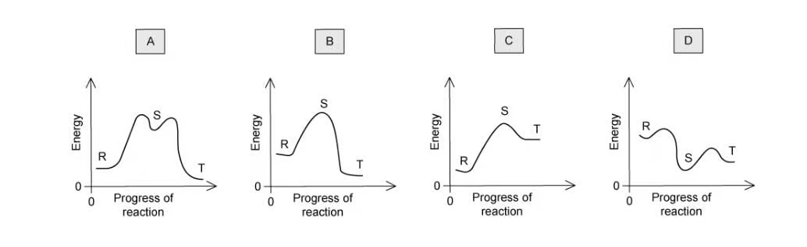
Show explanation
A. S must be higher in energy than R, while T must be lower than S.
5 Chemical energetics - Multiple Choice: Hard
Question 15 · Decomposition of phosphorus pentachloride · 1.5 Choice Hard Q1
In the gas phase, \(\ce{PCl5}\) decomposes into \(\ce{PCl3}\) and \(\ce{Cl2}\). The P–Cl bond energy is \(328\ \mathrm{kJ\ mol^{-1}}\) and the Cl–Cl bond energy is \(241\ \mathrm{kJ\ mol^{-1}}\). What is the enthalpy change?
Show explanation
B. Two P–Cl bonds are broken and one Cl–Cl bond is formed: \(2(328)-241=+415\ \mathrm{kJ\ mol^{-1}}\).
Question 16 · Sulfur oxide formation · 1.5 Choice Hard Q2
Given \(\Delta H_f^\ominus(\ce{SO2})=-297\ \mathrm{kJ\ mol^{-1}}\) and \(\Delta H_f^\ominus(\ce{SO3})=-395\ \mathrm{kJ\ mol^{-1}}\), what is \(\Delta H_r^\ominus\) for \(\ce{2SO2(g) + O2(g) -> 2SO3(g)}\)?
Show explanation
D. \(\Delta H=2(-395)-2(-297)=-196\ \mathrm{kJ\ mol^{-1}}\).
Question 17 · Calorimetry with incomplete heat transfer · 1.5 Choice Hard Q3
In a calorimetric experiment, \(2.50\ \mathrm{g}\) of fuel is burned. Thirty percent of the energy released is absorbed by \(500\ \mathrm{g}\) of water, whose temperature rises from \(25^\circ\mathrm{C}\) to \(68^\circ\mathrm{C}\). The specific heat capacity of water is \(4.2\ \mathrm{J\ g^{-1}\ K^{-1}}\). What is the total energy released per gram of fuel?
Show explanation
C. Water absorbs \(500(4.2)(43)=90300\ \mathrm{J}\), which is \(30\%\) of the total. Thus total per gram is \(90300/(0.30\times2.50)=120400\ \mathrm{J\ g^{-1}}\).
Question 18 · Average C–C bond enthalpy · 1.5 Choice Hard Q5
The enthalpy change of formation of cyclobutane is \(+75.1\ \mathrm{kJ\ mol^{-1}}\), the enthalpy change of atomisation of graphite is \(+712\ \mathrm{kJ\ mol^{-1}}\), the C–H bond enthalpy is \(390\ \mathrm{kJ\ mol^{-1}}\) and the H–H bond enthalpy is \(429\ \mathrm{kJ\ mol^{-1}}\). What is the average C–C bond enthalpy in cyclobutane?
Show explanation
C. Using the atomisation cycle, \(75.1=4(712)+4(429)-8(390)-4E\), giving \(E\approx342\ \mathrm{kJ\ mol^{-1}}\).
Question 19 · Ordering bond-energy changes · 1.5 Choice Hard Q6
The bond energies are Br–Br \(194\), Cl–Cl \(247\), C–H \(412\) and C–Cl \(338\ \mathrm{kJ\ mol^{-1}}\). The reactions are: W, \(\ce{Br2 -> 2Br}\); X, \(\ce{2Cl -> Cl2}\); Y, \(\ce{CH3 + Cl -> CH3Cl}\); Z, \(\ce{CH4 -> CH3 + H}\). What is the order of enthalpy changes from most negative to most positive?
Show explanation
A. Y forms C–Cl and is most negative; W, X and Z require respectively \(194\), \(247\) and \(412\ \mathrm{kJ\ mol^{-1}}\).
Question 20 · Formation enthalpy from combustion data · 1.5 Choice Hard Q7
A student calculated the standard enthalpy change of formation of propane using standard enthalpies of combustion of propane (\(-2220\ \mathrm{kJ\ mol^{-1}}\)) and hydrogen (\(-286\ \mathrm{kJ\ mol^{-1}}\)), but used an incorrect value for combustion of carbon. The final answer was \(-158\ \mathrm{kJ\ mol^{-1}}\). What value did the student use for combustion of carbon?
Show explanation
B. From \(-158=3x+4(-286)-(-2220)\), \(x=-411.3\ \mathrm{kJ\ mol^{-1}}\).
Structured questions
5 Chemical energetics - Structured Questions: Easy
Example 1 · Standard enthalpy definitions · 1.5 SQ Easy Q1
Standard enthalpy changes include enthalpy of formation, enthalpy of combustion and enthalpy of neutralisation.
(a)(i) Define enthalpy of formation. [1 mark]
(a)(ii) Write an equation that represents the enthalpy of formation of ammonia, \(\ce{NH3}\). [1 mark]
(b) State what is meant by standard conditions in enthalpy measurements. [1 mark]
(c) Which of the following equation(s) can represent the enthalpy of neutralisation? Explain your answer. [2 marks]
- A \(\ce{H2SO4(aq) + 2NaOH(aq) -> Na2SO4(aq) + 2H2O(l)}\)
- B \(\ce{H2SO4(aq) + Na2CO3(aq) -> Na2SO4(aq) + H2O(l) + CO2(g)}\)
- C \(\ce{HCl(aq) + NaOH(aq) -> NaCl(aq) + H2O(l)}\)
Show mark scheme / model answer
- (a)(i) The enthalpy change when one mole of a compound is formed from its elements in their standard states under standard conditions.
- (a)(ii) \(\frac12\ce{N2(g)}+\frac32\ce{H2(g)}\ce{->} \ce{NH3(g)}\).
- (b) \(298\ \mathrm{K}\) and \(101\ \mathrm{kPa}\).
- (c) B and C. Each forms one mole of water from an acid and a base; A forms two moles.
Example 2 · Enthalpy of reaction and transition state · 1.5 SQ Easy Q2
Freon 21 has formula \(\ce{CHCl2F}\). It is produced by:
\[\ce{CHCl3(g) + HF(g) -> CHCl2F(g) + HCl(g)}\]
The enthalpies of formation are: \(\ce{CHCl3(g)}\), \(-103.2\); \(\ce{CHCl2F(g)}\), \(-284.1\); \(\ce{HF(g)}\), \(-273.3\); and \(\ce{HCl(g)}\), \(-92.3\ \mathrm{kJ\ mol^{-1}}\).
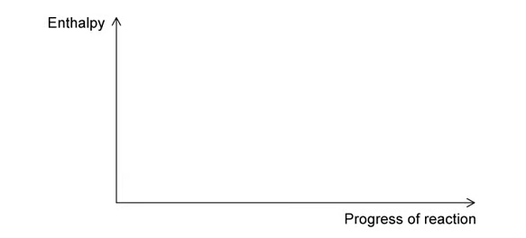
(a) Calculate \(\Delta H_r\). [2 marks]
(b) Using Fig. 2.1, draw a labelled reaction pathway diagram for part (a) and include the activation energy. [2 marks]
(c) Explain what is meant by the transition state. [1 mark]
Show mark scheme / model answer
- (a) \(\Delta H_r=[-284.1+(-92.3)]-[-103.2+(-273.3)]=+0.1\ \mathrm{kJ\ mol^{-1}}\).
- (b) Draw reactants and products at almost the same energy level because \(\Delta H\) is close to zero; show a peak and label the energy from reactants to the peak as \(E_a\).
- (c) The transition state is the short-lived, highest-energy arrangement in which bonds are partly broken and partly formed. It cannot be isolated.
Example 3 · Bond enthalpy calculations · 1.5 SQ Easy Q3
(a) Define average bond enthalpy. [2 marks]
(b) Give the formula for calculating the standard enthalpy change of reaction using bond energies. [1 mark]
(c) Use the data in the original question page to calculate the enthalpy change for:
\[\ce{CH2=CH2(g) + H2O(g) -> CH3CH2OH(l)}\]
[3 marks]
(d) Use the data in Table 3.2 to calculate the enthalpy change for the reaction of ethane and bromine to form 1,2-dibromoethane and hydrogen bromide. [4 marks]
Show mark scheme / model answer
- (a) The energy required to break one mole of a particular bond in gaseous molecules, averaged over similar compounds.
- (b) \(\Delta H_r=\sum E(\text{bonds broken})-\sum E(\text{bonds formed})\).
- (c) Bonds broken \(=614+4(414)+2(463)=3196\ \mathrm{kJ\ mol^{-1}}\); bonds formed \(=346+5(414)+358+463=3237\ \mathrm{kJ\ mol^{-1}}\); \(\Delta H_r=-41\ \mathrm{kJ\ mol^{-1}}\).
- (d) \(\ce{CH3CH3 + 2Br2 -> CH2BrCH2Br + 2HBr}\); broken \(=346+6(414)+2(193)=3216\); formed \(=346+4(414)+2(285)+2(366)=3304\); \(\Delta H_r=-88\ \mathrm{kJ\ mol^{-1}}\).
5 Chemical energetics - Structured Questions: Medium
Example 4 · Propane chlorination and bond energies · 1.5 SQ Medium Q1
Propane reacts with chlorine:
\[\ce{C3H8(g) + Cl2(g) -> C3H7Cl(g) + HCl(g)}\]
The bond energies are C–H \(410\), C–Cl \(340\), Cl–Cl \(242\) and H–Cl \(431\ \mathrm{kJ\ mol^{-1}}\).
(a)(i) Use bond energies to calculate the enthalpy change. Include a sign. [3 marks]
(a)(ii) State the conditions needed for this reaction to occur. [1 mark]
(b) Construct a labelled reaction pathway diagram including the activation energy. [3 marks]
(c) Ethane and chlorine also react under the same conditions. State and explain the difference in enthalpy change for the two reactions. [2 marks]
(d) Propane reacts with bromine in a similar reaction. Suggest, with a reason, whether the sum of the bonds broken would be larger or smaller than for propane and chlorine. [2 marks]
Show mark scheme / model answer
- (a)(i) Broken: \(410+242=+652\); formed: \(340+431=-771\); \(\Delta H=-119\ \mathrm{kJ\ mol^{-1}}\).
- (a)(ii) UV light or sunlight.
- (b) Exothermic profile with products below reactants; label the upward energy gap to the peak as \(E_a\) and the downward gap as \(\Delta H_r\).
- (c) Little or no difference: the same types and numbers of bonds are broken and formed.
- (d) Smaller; Br–Br is weaker than Cl–Cl because bromine atoms are larger and the bond is longer.
Example 5 · Butan-1-ol combustion calorimetry · 1.5 SQ Medium Q2
The apparatus in Fig. 2.1 is used to determine the enthalpy of combustion of butan-1-ol, \(\ce{C4H9OH}\), with \(M_r=74.12\ \mathrm{g\ mol^{-1}}\).
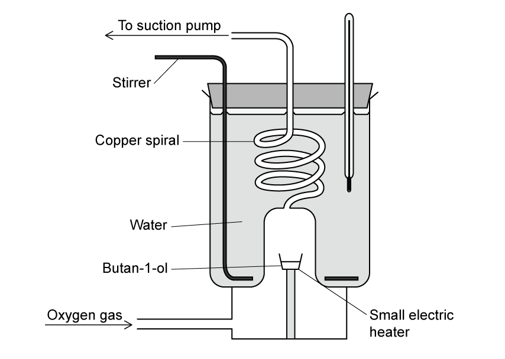
(a)(i) Write an equation for the enthalpy of combustion of butan-1-ol. [2 marks]
(a)(ii) Suggest the purpose of the copper spiral and small electric heater. [2 marks]
(b) The volume of water is \(875\ \mathrm{cm^3}\), its temperature rises from \(22.5^\circ\mathrm{C}\) to \(25.0^\circ\mathrm{C}\), and \(2.20\ \mathrm{g}\) of butan-1-ol is burned. Use \(c=4.18\ \mathrm{J\ g^{-1}\ K^{-1}}\) to calculate \(q\) to two significant figures. [2 marks]
(c) Determine the enthalpy of combustion of butan-1-ol. [3 marks]
(d) The standard value is \(-332.42\ \mathrm{kJ\ mol^{-1}}\). Calculate the percentage error and suggest one source of error. [2 marks]
Show mark scheme / model answer
- (a)(i) \(\ce{C4H9OH(l) + 6O2(g) -> 4CO2(g) + 5H2O(l)}\).
- (a)(ii) The copper spiral transfers heat from hot gases to the water; the heater ignites or vaporises the alcohol.
- (b) \(q=mc\Delta T=875(4.18)(2.5)=9143.75\ \mathrm{J}=9.1\ \mathrm{kJ}\).
- (c) \(n=2.20/74.12=0.02968\ \mathrm{mol}\); \(\Delta H=-9.14375/0.02968=-308\ \mathrm{kJ\ mol^{-1}}\).
- (d) Percentage error \(=(332.42-308)/332.42\times100=7.3\%\); heat loss, incomplete combustion or incomplete heat transfer.
Example 6 · Hess’ law cycle for butane · 1.5 SQ Medium Q3
Complete the Hess’ law energy cycle relating butane to enthalpies of formation and combustion. Include the relevant species in the two empty boxes, label each enthalpy change and complete the arrows.
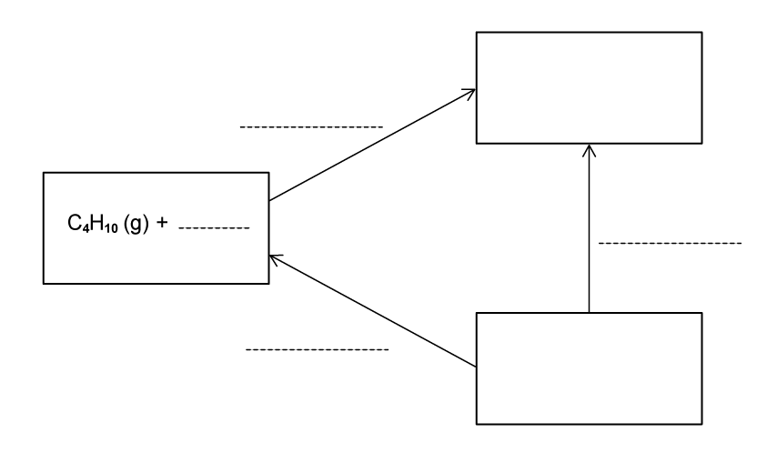
For the formation-data route, use \(\Delta H_f^\ominus(\ce{CO2(g)})=-393.5\), \(\Delta H_f^\ominus(\ce{H2O(g)})=-242\) and \(\Delta H_f^\ominus(\ce{C4H10(g)})=-125\ \mathrm{kJ\ mol^{-1}}\).
(a) Complete the cycle. [4 marks]
(b) Calculate \(\Delta H_c^\ominus\) for butane using the formation data. [1 mark]
(c) Use the bond-energy data C–C \(348\), C–H \(410\), C=O \(743\), H–O \(463\), O=O \(495\ \mathrm{kJ\ mol^{-1}}\) to calculate \(\Delta H_c\). [1 mark]
(d) Suggest, with a reason, which value is likely to be more accurate. [2 marks]
Show mark scheme / model answer
- (a) The common combustion products are \(\ce{4CO2(g)+5H2O(g)}\). The formation and combustion arrows must have correct coefficients and directions.
- (b) \(\Delta H_c=4(-393.5)+5(-242)-(-125)=-2659\ \mathrm{kJ\ mol^{-1}}\).
- (c) \(\Delta H=\{3(348)+10(410)+6.5(495)\}-\{8(743)+10(463)\}=-2212.5\ \mathrm{kJ\ mol^{-1}}\).
- (d) The formation-data value is more accurate because it uses enthalpies for the actual substances; bond enthalpies are average values.
Example 7 · Nitrogen oxides and N=O bond enthalpy · 1.5 SQ Medium Q4
Two common oxides of nitrogen are nitrogen monoxide, \(\ce{NO}\), and nitrogen dioxide, \(\ce{NO2}\).
(a)(i) Complete the oxidation numbers of nitrogen in \(\ce{NO}\) and \(\ce{NO2}\). [1 mark]
(a)(ii) Write equations for formation of \(\ce{NO2}\) by reaction of \(\ce{N2}\) with \(\ce{O2}\) and by reaction of \(\ce{NO}\) with \(\ce{O2}\). [2 marks]
(b) The reaction between \(\ce{N2}\) and \(\ce{O2}\) has \(\Delta H_r=+497\ \mathrm{kJ\ mol^{-1}}\). The N–O bond in \(\ce{NO2}\) is a double covalent bond. Use N≡N \(941\) and O=O \(495\ \mathrm{kJ\ mol^{-1}}\) to calculate the N=O bond enthalpy. [3 marks]
(c) The boiling points of carbon dioxide and nitrogen dioxide are \(-78.5^\circ\mathrm{C}\) and \(21^\circ\mathrm{C}\), respectively. Suggest a reason for the difference. [2 marks]
(d) Write an equation for the enthalpy of formation of \(\ce{NO}\). [1 mark]
Show mark scheme / model answer
- (a) N is +2 in \(\ce{NO}\) and +4 in \(\ce{NO2}\). Suitable equations include \(\ce{N2+2O2->2NO2}\) and \(\ce{2NO+O2->2NO2}\).
- (b) \(+497=941+2(495)-4E\), so \(E=358.5\ \mathrm{kJ\ mol^{-1}}\).
- (c) \(\ce{NO2}\) has stronger intermolecular forces than \(\ce{CO2}\), so more energy is needed to separate its molecules.
- (d) \(\frac12\ce{N2(g)}+\frac12\ce{O2(g)}\ce{->}\ce{NO(g)}\).
5 Chemical energetics - Structured Questions: Hard
Example 8 · Hydrolysis and combustion of urea · 1.5 SQ Hard Q1
Urea, \(\ce{CO(NH2)2}\), is hydrolysed with water to form ammonia and carbon dioxide. The standard enthalpies of formation are \(\ce{H2O(l)}=-287.0\), \(\ce{CO(NH2)2(aq)}=-320.5\), \(\ce{CO2(g)}=-414.5\) and \(\ce{NH3(aq)}=-81.0\ \mathrm{kJ\ mol^{-1}}\).
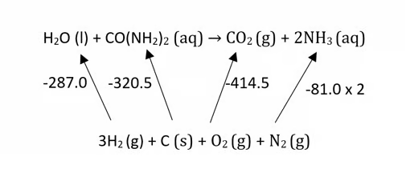
(a)(i) Write an equation for the hydrolysis reaction. [1 mark]
(a)(ii) Construct a simple energy cycle for the hydrolysis. [2 marks]
(b) Use the data to calculate the standard enthalpy change for hydrolysis. [1 mark]
(c) Calculate the enthalpy of combustion of urea for:
\[\ce{2CO(NH2)2(s) + 3O2(g) -> 2CO2(g) + 2N2(g) + 4H2O(l)}\]
[1 mark]
Show mark scheme / model answer
- (a) \(\ce{H2O(l)+CO(NH2)2(aq)->CO2(g)+2NH3(aq)}\). In the cycle, connect both sides to the elements using formation enthalpies; the arrows from elements to compounds point upwards in the displayed cycle.
- (b) \(\Delta H_r=-(-287.0)-(-320.5)+(-414.5)+2(-81.0)=+31.0\ \mathrm{kJ\ mol^{-1}}\).
- (c) \(\Delta H_c=[2(-414.5)+4(-287.0)]-[2(-320.5)]=-1336\ \mathrm{kJ\ mol^{-1}}\).
Example 9 · Ammonium chloride calorimetry · 1.5 SQ Hard Q2
The enthalpy change of solution for ammonium chloride is measured using calorimetry. \(12.04\ \mathrm{g}\) of \(\ce{NH4Cl}\) is dissolved in \(125.0\ \mathrm{cm^3}\) of water at \(19.5^\circ\mathrm{C}\). The enthalpy of solution is \(+15.1\ \mathrm{kJ\ mol^{-1}}\).
(a) Determine the energy change, in J, when the ammonium chloride dissolves. [2 marks]
(b) Use your answer to determine the change in temperature. [1 mark]
(c) Determine the final temperature of the solution. [1 mark]
Show mark scheme / model answer
- (a) \(n=12.04/53.5=0.225\ \mathrm{mol}\); \(q=0.225(15.1\times10^3)=3397.5\ \mathrm{J}\).
- (b) \(\Delta T=q/(mc)=3397.5/[125.0(4.18)]=+6.5^\circ\mathrm{C}\).
- (c) The dissolution is endothermic, so the temperature falls: \(19.5-6.5=13.0^\circ\mathrm{C}\).
Example 10 · Hydrogenation and polymerisation of propene · 1.5 SQ Hard Q3
Use the following bond enthalpies: H–H \(435\), C–H \(413\), C–C \(347\) and C=C \(619\ \mathrm{kJ\ mol^{-1}}\).
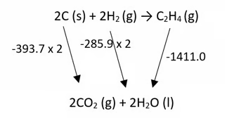
(a) Determine the enthalpy of hydrogenation of propene. [3 marks]
(b) Suggest, with a reason, whether polymerisation of propene is exothermic or endothermic. [2 marks]
(c) Use the combustion data in the original question page to calculate the standard enthalpy of formation of ethene at \(298\ \mathrm{K}\). [2 marks]
Show mark scheme / model answer
- (a) \(\ce{CH3CH=CH2 + H2 -> CH3CH2CH3}\); \(\Delta H=619+435-347-2(413)=-119\ \mathrm{kJ\ mol^{-1}}\).
- (b) One C=C bond is broken and two C–C bonds form. Since \(619<2(347)=694\), there is a net energy output and polymerisation is exothermic.
- (c) \(\Delta H_f^\ominus=2(-393.7)+2(-285.9)-(-1411.0)=+51.8\ \mathrm{kJ\ mol^{-1}}\).